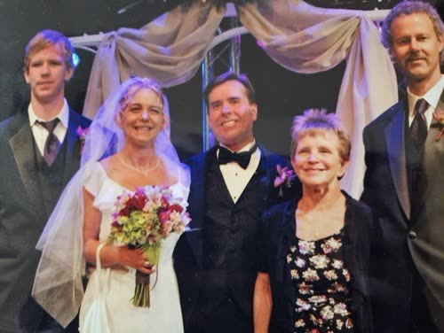

I was brought up in a household in which my mother’s side of the family were Roman Catholic and my father’s side of the family were all Mormon. My father was not a practicing Mormon so my parents made the decision to raise my sister and I as Catholic. The Catholic church in our town was ritualistic and rarely deviated from the strict liturgy structure the church had decided upon. The church did not encourage us to read the Bible for ourselves, study the scriptures or have a personal relationship with Jesus. The teaching was clear that as long as a person was baptized as an infant into Catholicism you would eventually get to heaven.
In my teenage years I stopped going to church and was living a secular lifestyle. I did believe in God buy didn’t think about Him much. In 1984 I began my career in the Semiconductor industry eventually obtaining positions as the Line Maintenance Dept. Manager and Senior Equipment Engineering Manager. I met my wife Connie at this time as we were working at the same facility. At this point I started feeling like something was missing from my life and I wasn’t doing something I was supposed to be. This feeling ended up being God drawing me to himself and the Lord Jesus Christ although I didn’t realize it at the time. I came to saving faith in Jesus after some of my co-workers were discussing the Book of Revelation. Two of them were Christians and the other was a Jehovah Witness. I had no idea the Bible contained what they were talking about. One of the Christians later gave me a small new testament and I read the Book of Revelation to learn what it contained. I was very intrigued by what is said and it gave me a thirst to read more of the Bible. I then asked my mother if she had a Bible and she said she had one that someone gave her although she had never looked at it. It was an old King James Bible which have never been opened. I took it home and later started reading the Gospel of Matthew. As I read through Matthew, God convicted me of my sin and I absolutely knew I needed Jesus to save me from my sins and certain destruction. God also put into my heart, at that moment, the conviction of the true and trustworthiness of the Word of God. I was born again by the faithfulness of a loving God that sent his Son to redeem me from the punishment which I rightly deserved.
Several years later my wife and stepdaughter would come to faith in Christ along with my sister. My wife became very involved in children’s ministries with a focus on special needs children. I spent 35 years in the Semiconductor manufacturing industry and then moved on to the building products and mining industry after the company I was working for lost most of their mass production contracts.
My wife, seemingly very healthy, suffered a major heart attack and went home to be with the Lord a few years after I changed industries. My comfort is that through God’s unending love she is in heaven with the Lord Jesus and I will see her again when he takes me home. I have since retired from the manufacturing industries I was a part of and have been redeployed to serve the Lord at Cool Community Church, my family and however He will lead me.
Sunday Mornings
10:30 am